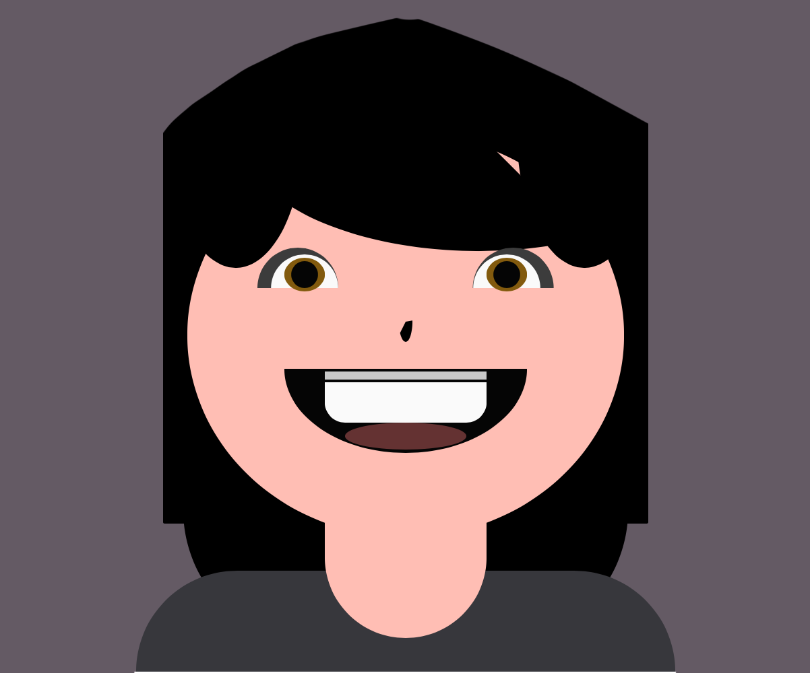

After

This is my P5js Selfie portrait. It took me a few days to figure out what art style I was going for and how I wanted to look like. I originally wanted to make it more anime-like, but with the amount of codes it takes to make it look like that, it seems like a stretch. So I created more of a hilarious, cartoon-like expression and portrait, and seeing this kind of art style fits me more because I always see myself as a goofy, or class clown type of person.